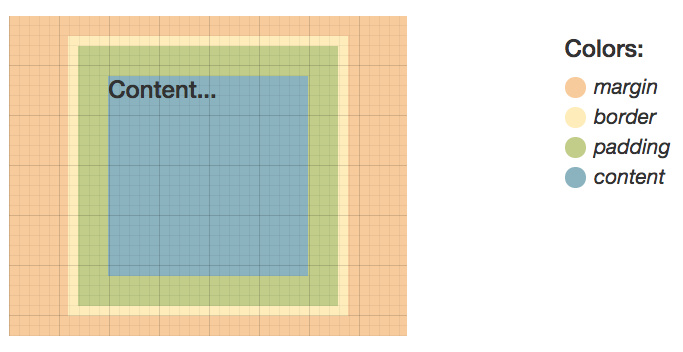

LESSON 1: The Basics of the Web & HTML
The Web
The web-World Wide Web- is a collection of HTML documents. The web was invented in the 1990s and has about 20 billion pages.
HTML stands for HyperText Markup Language which glues everything together and is the main document type of the web. Links between pages are called hyperlinks or links for short. These make the web web-like.
When a browser makes a request via the internet to servers, the requests are using a protocol called HTTP and the servers respond with files that the browser ends up displaying.
Browser: A program that runs on a computer to display files found on the web
Internet: World's largest computer network
HTTP: The main protocol of the web
Servers: Computers that host the files that make up the web
HTML
HyperText Markup Language is made up of,
- Text content: what can be seen
- Markup: what it looks like or how it's arranged
- References to other documents: images and videos
- Links to other pages
HTML Markup
Markup which is made up of things called tags are used to make plain text look different. There is an opening tag and a closing tag which make up an Element.
Computers are stupid
Computers interpret language literally. Therefore, computer programming languages are designed to limit ambiguity.
HTML Attributes
Tags in an element can be given multiple attributes with a value.
Click to learn more! Here, the attribute name is 'href', its value is the URL given and is used for making links.
Here, there is no need for a closing tag because the tag has no content. This is called a 'Void' tag. The attribute used is 'src'-source. An alternate text is displayed for broken requests and blind people.
Whitespace
'br'-break tag when multiple line breaks are needed. This is a void tag.
'p'-paragraph tag is not a void tag since it has content. This tag creates an invsible box around the text that has length and width.
Inline VS Block Elements
Inline tags: br, b, em, img, a, span, strong
Block tags: p, div, form
Container Element
Elements that do nothing but contain stuff inside themselves.
Span VS Div
Both are normal elements and have content. The only difference is that Span is 'Inline' and Div is 'block'. Div tag behaves how a 'p' tag would.
HTML Document Structure
Meta-data, Javascript, CSS are found inside the 'head' tag along with the title of the page which appears on the top of the browser window. The actual conent go inside the 'body' tag fo the document.
Remember: there are too many facts to keep in mind in programming. Google search OR use this helpful site!
Writing code that people can easily read is very important and a huge part of writing code is structuring it well. In HTML, the indentation level increases when an idea begins and decreases when it is done.
LESSON 2: Introduction to HTML & CSS
Developer Tools
3 languages that go into web development:
- HTML: controls the structure of a webpage
- CSS: controls the style/how it looks
- Javascript
Developer tools shows the structure of a webpage; how the browser interprets it. All visible elements are rectangular boxes. Even a circle fits in a box.
Tree-like Structure
The page structure is tree-like since it branches out. Classification shows the browser what is text, image, etc. The same html document can be styled in many different ways from each other.
DOM(Document Object Model): Refers to the tree-like structure of a page.
html > language > syntax+rules > tags > elements in a tree > DOM
HTML Boxes, Grids & Rules
Thinking of things in terms of boxes makes the life of a front-end developer much easier. A grid serves to make sure that things are properly aligned. Look at a page and think of ways to draw a box around every visual element.
Boxify a design. Largest box is the entire page; work from big to small. In grid-based layout start from left to right and top to bottom.
DIV: Boxes are defined with these tags. In order to style them individually, each div tag must be given a 'class' attribute. These attributes act as labels on boxes. Divs take up the entire width of the page by default.
LESSON 3: Adding Style
CSS
Cascading Style Sheets. Several CSS files can be referenced in html. Cascading is when the most specific rule is applied.
Selectors
These allow the targetting of specific html elements apply style to them.
ID selectors are unique and the most powerful type of selector by beating out other selectors. Class selectors refer to a group of elemnts that be styled together. Class selectors are recommended over ID.
font-styles: Italic, Normal, Oblique
Example: background-color: red =
Declaration ; background-color =
Property ; red =
Value
3 ways to include CSS styling:
- Top of html document inside the head tag
- Link html to a separate CSS file
- Write style 'inline' with html which may lead to repeated code
Coding Style
Coding style is how code is written, organized and presented. Consistent indentations, character spacings, variable names and code organization.
HTML style: consistent indentations, lower case names, sparse comments
CSS style: consistent indentations, one attribute per line, consistent spaces
CSS Reference
This lists all standard CSS properties. It allows quick access to detailed information.
Semantic Tags
The tag's element name determines both the semantic meaning of the content and the default style rules applied to it.
The Box Model

- Content: image/text displayed on the page. The 3 layers protect it so that other items do not overlap with it or sit too close
- Padding: clears around content and is affected by background color
- Border: goes around padding and content and inherits the color property
- Margin: clears area around border and is completely transparent
Box-sizing: border-box
This calculates the element size including both the border and padding to make layouts easier. No matter how the padding and border sizes are changed the size of the box will still remain the same. However, the margin is not included in this size. The size can be given by pixels or percentage. Pixels will take exactly the assigned size no matter the screen size whereas percentage will change depending on the screen size.
Maximum width: This lets it resize the box and become smaller when necessary, but not larger than the maximum width.
Flex Box Layout
Flexible Box: Efficient way to layout a line and distribute space inside a container or div. If several boxes need to be placed next to each other, the display attribute of the parent container should be changed to the value 'flex' and the child elements a size smaller than its default 100%. display: flex;
Flexbox: small-scale layouts ; Grid: large-scale layout
Code, Test, Refine
Write code -> Test it against the mockup -> Refine/modify the code where necessary ->Repeat process if needed
Always validating code by executing it every few lines typed is important to make sure that an error can be addressed immediately. Developer Tools is great for code, text, refine routine.